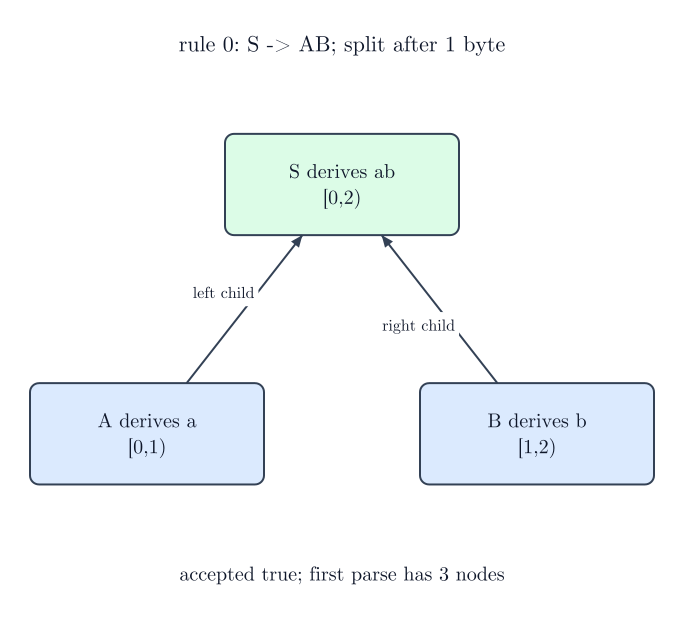
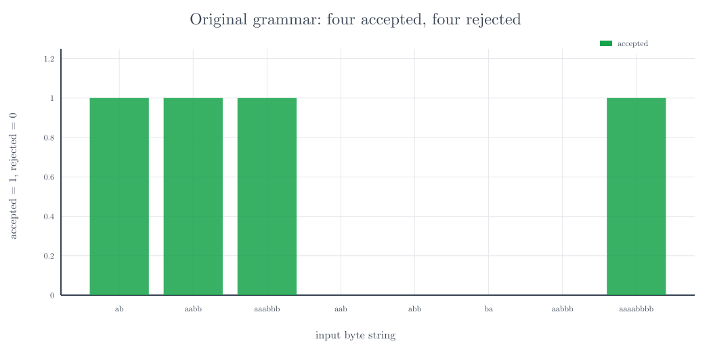
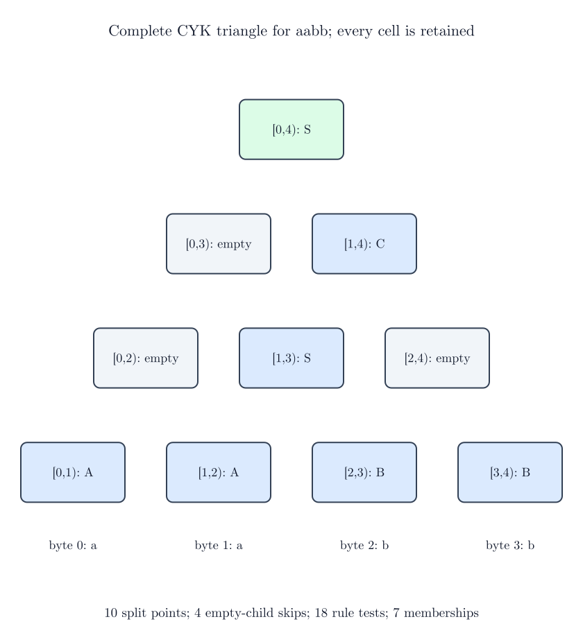
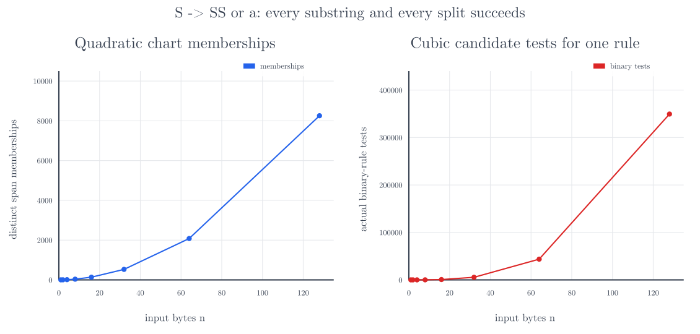

CYK: Derive Substrings, Recognize the Whole String, Recover One Parse
Abstract
CYK recognizes a context-free language by combining derivations of shorter substrings. For an epsilon-free grammar whose rules are A→BC or A→one byte, it fills every positive-length span and accepts when the start derives the whole input. We begin with the two-byte string ab, retain the original eight examples for an bn, then inspect the complete chart and one parse of aabb. A deliberately ambiguous grammar separates recognition and first-witness reconstruction from parse counting. All computations use datamunge's single canonical core, with compressed arbitrary integer ids, owned actual witnesses, checked dense geometry and explicit potential-work budgets. The usual cubic bound fixes the grammar; chart space also depends on its nonterminal count. Empty input, byte terminals, duplicate rules and unreachable symbols have specified behavior rather than implicit grammar-conversion assumptions.
Start with two terminal facts and one binary rule
Use the original ids S=0, A=1, B=2, C=3 and grammar S→AB | AC, C→SB, A→a, B→b. The unary map in CNFGrammar means terminal-byte productions, not nonterminal unit rules. For input ab, A derives the first byte and B derives the second; the binary rule S→AB establishes S over the whole two-byte span. The program reads this actual first witness and draws the two child facts combining into their parent.
#include <dm/dm.hpp>
int main() {
std::filesystem::create_directories("build");
dm::algorithms::CNFGrammar g;g.unary['a']={1};g.unary['b']={2};g.binary={{0,1,2},{0,1,3},{3,0,2}};
const auto a=dm::algorithms::cyk_analyze(g,"ab");const auto tree=dm::algorithms::cyk_first_parse(a);
const auto& e=dm::algorithms::cyk_cell(a,0,2).entries[0];
if(!a.accepted || e.nonterminal!=0 || e.left_length!=1 || tree.size()!=3) return 1;
const std::vector<std::string> names{"S","A","B","C"};
std::print("| byte span | substring | deriving nonterminal ids |\n| :--- | :--- | :--- |\n");
for(const auto& cell:a.cells) {
std::vector<int> ids;for(const auto& entry:cell.entries) ids.push_back(entry.nonterminal);
std::print("| [{},{}) | {} | {} |\n",cell.begin,cell.begin+cell.length,a.input.substr(cell.begin,cell.length),ids);
}
dm::graphics::Diagram d(78,1000);dm::graphics::DiagramNodeStyle box;box.width=3;box.height=1.3;box.font_size=20;box.fill={219,234,254};
d.node("left",{0,0},std::format("{} derives a\n[0,1)",names[e.left]),box)
.node("right",{5,0},std::format("{} derives b\n[1,2)",names[e.right]),box);
box.fill={220,252,231};d.node("parent",{2.5,3.2},std::format("{} derives ab\n[0,2)",names[e.nonterminal]),box);
d.edge("left","parent","left child").edge("right","parent","right child")
.text({2.5,5},std::format("rule {}: {} -> {}{}; split after {} byte",e.binary_rule,names[e.nonterminal],names[e.left],names[e.right],e.left_length),22)
.text({2.5,-1.8},std::format("accepted {}; first parse has {} nodes",a.accepted,tree.size()),20)
.save_svg("build/cyk_combine.svg");
std::print("\nAccepted {}; cells {}; split points {}; actual binary rule tests {}; new memberships {}.\n",a.accepted,a.cells.size(),a.work.split_points,a.work.binary_rule_tests,a.work.new_states);
}| byte span | substring | deriving nonterminal ids |
|---|---|---|
| [0,1) | a | [1] |
| [1,2) | b | [2] |
| [0,2) | ab | [0] |
Accepted true; cells 3; split points 1; actual binary rule tests 3; new memberships 3.

Derive the recurrence and why it is correct
Let T(i,ℓ) be the set of nonterminals deriving the half-open byte span [i,i+ℓ). Terminal rules provide the base row. Every longer binary-normal-form parse has a root rule A→BC and a positive split k between its two child yields:
Soundness follows by induction on ℓ: a terminal entry has its literal rule, and combining two valid child derivations with A→BC gives a valid parent. For completeness, any parse of a longer span has such a root and split; its shorter child spans occur by induction, so the loop visits their split and rule and inserts the parent. Children are strictly shorter, making the dependency graph acyclic even when the grammar itself has recursive rules. Acceptance is exactly start∈T(0,n) for n>0.
The implementation loops in increasing length, begin, split and original binary-rule index. Dense memberships are compressed by sorted distinct ids, so negative ids and INT_MIN/INT_MAX do not imply huge id-indexed arrays. Each first insertion stores its split and original rule index. Later alternatives leave that first witness intact. Public cell entries are extracted in increasing original-id order; a grammar's rule-vector order can change the chosen parse without changing the recognized language.
The represented grammar has no epsilon rule. Empty input therefore rejects, including a default grammar with no productions. General CFG-to-normal-form conversion, removal of nonterminal unit rules and any special treatment of an epsilon-producing start are separate operations not supplied by this API. A start symbol on a binary right-hand side is valid here because this grammar is epsilon-free.
Retain the original eight strings
The grammar generates exactly ak bk for k≥1. Expanding S→AB gives ab. Expanding S→AC and then C→SB wraps one a around a smaller S and one b: S⇒aSb. Induction gives only ak bk; repeated wrapping constructs every such string. In particular, equal counts alone do not suffice: all a bytes must precede all b bytes. This is a nonregular language in the formal-language sense. If a finite automaton pumped a nonempty substring of the initial a block of ap bp, pumping would change the number of a bytes while leaving the b count fixed, contradicting recognition of exactly this language.
#include <dm/dm.hpp>
int main() {
std::filesystem::create_directories("build");
dm::algorithms::CNFGrammar g;g.unary['a']={1};g.unary['b']={2};g.binary={{0,1,2},{0,1,3},{3,0,2}};
const std::vector<std::string> strings{"ab","aabb","aaabbb","aab","abb","ba","aabbb","aaaabbbb"};
const std::vector<bool> expected{true,true,true,false,false,false,false,true};std::vector<double> accepted;
std::print("| original input | accepted |\n| :--- | :--- |\n");
for(std::size_t i=0;i<strings.size();++i) {
const bool member=dm::algorithms::cyk_recognize(g,strings[i]);if(member!=expected[i]) return 1;
accepted.push_back(member?1:0);std::print("| {} | {} |\n",strings[i],member);
}
auto plot=dm::graphics::RPlot::barplot(accepted,strings,"accepted",{22,163,74});
plot.title("Original grammar: four accepted, four rejected").x_label("input byte string").y_label("accepted = 1, rejected = 0").y_limits(0,1.25).size(1050,520)
.save_svg("build/cyk_accept.svg");
const bool empty=dm::algorithms::cyk_recognize(g,""),unknown=dm::algorithms::cyk_recognize(g,"ax"),wrong_order=dm::algorithms::cyk_recognize(g,"abab");
if(empty || unknown || wrong_order) return 1;
std::print("\nOriginal accepted strings: 4 of 8. Empty input {}; unknown byte ax {}; equal-count wrong-order abab {}.\n",empty,unknown,wrong_order);
}| original input | accepted |
|---|---|
| ab | true |
| aabb | true |
| aaabbb | true |
| aab | false |
| abb | false |
| ba | false |
| aabbb | false |
| aaaabbbb | true |
Original accepted strings: 4 of 8. Empty input false; unknown byte ax false; equal-count wrong-order abab false.

Inspect every cell of aabb, then recover one complete parse
A four-byte input has ten nonempty contiguous spans. The next program retains every cell, including empty ones. In particular T(1,2) contains S for ab, T(1,3) contains C for abb, and T(0,4) contains S for aabb. Its stored root witness uses S→AC, then the right child uses C→SB. Empty cells for aa, bb and aab explain why other splits fail. Chart membership is richer than a single parse; the reconstructed tree follows only the stored first successful choices.
#include <dm/dm.hpp>
int main() {
std::filesystem::create_directories("build");
dm::algorithms::CNFGrammar g;g.unary['a']={1};g.unary['b']={2};g.binary={{0,1,2},{0,1,3},{3,0,2}};
const auto a=dm::algorithms::cyk_analyze(g,"aabb");const auto parse=dm::algorithms::cyk_first_parse(a);
if(!a.accepted || a.cells.size()!=10 || parse.size()!=7 || a.work.binary_rule_tests!=18 || a.work.new_states!=7) return 1;
const std::vector<std::string> names{"S","A","B","C"};dm::graphics::Diagram d(75,1050);dm::graphics::DiagramNodeStyle box;box.width=2;box.height=1.15;box.font_size=18;
std::print("| begin | length | substring | deriving ids |\n| ---: | ---: | :--- | :--- |\n");
for(const auto& cell:a.cells) {
std::vector<int> ids;std::string symbols;
for(const auto& e:cell.entries) {ids.push_back(e.nonterminal);if(!symbols.empty()) symbols+=", ";symbols+=names[e.nonterminal];}
const std::string label=symbols.empty()?"empty":symbols;
std::print("| {} | {} | {} | {} |\n",cell.begin,cell.length,a.input.substr(cell.begin,cell.length),ids);
box.fill=cell.entries.empty()?dm::graphics::RGB{241,245,249}:dm::graphics::RGB{219,234,254};if(cell.length==a.input.size()) box.fill={220,252,231};
d.node(std::format("{},{}",cell.begin,cell.length),{2.8*cell.begin+1.4*(cell.length-1),2.2*(cell.length-1)},std::format("[{},{}): {}",cell.begin,cell.begin+cell.length,label),box);
}
for(std::size_t i=0;i<a.input.size();++i) d.text({2.8*i,-1.4},std::format("byte {}: {}",i,a.input[i]),18);
d.text({4.2,8.5},"Complete CYK triangle for aabb; every cell is retained",22)
.text({4.2,-2.7},std::format("{} split points; {} empty-child skips; {} rule tests; {} memberships",a.work.split_points,a.work.skipped_empty_splits,a.work.binary_rule_tests,a.work.new_states),19)
.save_svg("build/cyk_triangle.svg");
std::print("\n| preorder node | nonterminal | byte span | left child | right child |\n| ---: | :--- | :--- | :--- | :--- |\n");
for(std::size_t i=0;i<parse.size();++i) {
const auto& node=parse[i];const bool leaf=node.length==1;
std::print("| {} | {} | [{},{}) | {} | {} |\n",i,names[node.nonterminal],node.begin,node.begin+node.length,leaf?"leaf":std::to_string(node.left_child),leaf?"leaf":std::to_string(node.right_child));
}
std::print("\nAccepted {}; first parse nodes {}; reconstructed without another CYK run.\n",a.accepted,parse.size());
}| begin | length | substring | deriving ids |
|---|---|---|---|
| 0 | 1 | a | [1] |
| 1 | 1 | a | [1] |
| 2 | 1 | b | [2] |
| 3 | 1 | b | [2] |
| 0 | 2 | aa | [] |
| 1 | 2 | ab | [0] |
| 2 | 2 | bb | [] |
| 0 | 3 | aab | [] |
| 1 | 3 | abb | [3] |
| 0 | 4 | aabb | [0] |
| preorder node | nonterminal | byte span | left child | right child |
|---|---|---|---|---|
| 0 | S | [0,4) | 1 | 2 |
| 1 | A | [0,1) | leaf | leaf |
| 2 | C | [1,4) | 3 | 6 |
| 3 | S | [1,3) | 4 | 5 |
| 4 | A | [1,2) | leaf | leaf |
| 5 | B | [2,3) | leaf | leaf |
| 6 | B | [3,4) | leaf | leaf |
Accepted true; first parse nodes 7; reconstructed without another CYK run.

A terminal leaf covers one byte. Every other recovered node has two nonempty children that partition its span. A full binary tree with n leaves has n−1 internal nodes, hence 2n−1 total nodes: counting edges gives 2I=I+n−1 and I=n−1. Native reconstruction returns exactly that many nodes in preorder, using an explicit task stack to avoid recursion depth. It checks the visited local witness structure and root consistency. Since a result does not retain the original grammar, those checks do not certify arbitrary public edits against that grammar. A cell accessor similarly validates bounds, vector length and the selected coordinates, and returns a borrowed const reference whose lifetime ends on owner mutation or destruction.
Count geometry separately from successful work and ambiguity
Let m be the number of distinct nonterminal ids, including the start, and r the number of raw binary productions. The number of positive-length cells Q and split points K are
The last identity also counts choices of three boundaries from n+1 boundary positions. Dense membership storage has Qm slots. In the worst case each split tests r rules, so Kr bounds binary-rule candidates. The kernel still visits all K splits when children are empty; it skips the rule loop at those splits. Actual rule tests can thus be far below Kr. These are operation counts, not elapsed time or measurements of allocator/cache cost.
Use the ambiguous grammar S→SS | a. Every nonempty all-a substring derives S, so every split reaches the binary rule. The exact counts are Q memberships, K actual binary tests and K matching-rule events. For aaaa there are five binary tree shapes: the Catalan recurrence C_j=Σ_{i=0}^{j−1}C_i C_{j−1−i}, C_0=1 gives C_1=1, C_2=2, C_3=5. A boolean chart stores one membership per span, and the first-witness policy chooses split one, then proceeds rightward. Neither a single recovered tree nor the count of matching-rule events counts the full parses. Duplicating an identical grammar rule changes candidate/event counts while leaving the language and distinct chart memberships unchanged.
#include <dm/dm.hpp>
int main() {
std::filesystem::create_directories("build");
dm::algorithms::CNFGrammar g;g.unary['a']={0};g.binary={{0,0,0}};
std::vector<double> sizes,cells,splits;
std::print("| bytes | potential state slots | actual memberships | split points | actual rule tests | first parse nodes |\n| ---: | ---: | ---: | ---: | ---: | ---: |\n");
for(int n:{1,2,4,8,16,32,64,128}) {
const auto a=dm::algorithms::cyk_analyze(g,std::string(n,'a'));const auto p=dm::algorithms::cyk_first_parse(a);
if(!a.accepted || a.work.new_states!=a.shape.cells || a.work.binary_rule_tests!=a.shape.splits || p.size()!=static_cast<std::size_t>(2*n-1)) return 1;
std::print("| {} | {} | {} | {} | {} | {} |\n",n,a.shape.state_slots,a.work.new_states,a.work.split_points,a.work.binary_rule_tests,p.size());
sizes.push_back(n);cells.push_back(a.work.new_states);splits.push_back(a.work.binary_rule_tests);
}
auto storage=dm::graphics::RPlot::create();
storage.line(sizes,cells,"memberships",{37,99,235},2).points(sizes,cells,"",{37,99,235},4)
.title("Quadratic chart memberships").x_label("input bytes n").y_label("distinct span memberships")
.x_limits(0,135).y_limits(0,10500).size(540,480);
auto work=dm::graphics::RPlot::create();
work.line(sizes,splits,"binary tests",{220,38,38},2).points(sizes,splits,"",{220,38,38},4)
.title("Cubic candidate tests for one rule").x_label("input bytes n").y_label("actual binary-rule tests")
.x_limits(0,135).y_limits(0,440000).size(540,480);
dm::graphics::RLayout::create(1,2).add(storage).add(work).size(1130,540)
.title("S -> SS or a: every substring and every split succeeds").save_svg("build/cyk_work.svg");
const auto first=dm::algorithms::cyk_analyze(g,"aaaa");g.binary.push_back({0,0,0});const auto duplicate=dm::algorithms::cyk_analyze(g,"aaaa");
std::print("\nAmbiguous aaaa: one rule gives {} memberships, {} matching events and one {}-node returned parse. Duplicating the rule gives {} memberships and {} matching events.\n",first.work.new_states,first.work.matching_rules,dm::algorithms::cyk_first_parse(first).size(),duplicate.work.new_states,duplicate.work.matching_rules);
int rejections=0;
try {dm::algorithms::cyk_analyze(g,"aaaa",9,0);} catch(const std::length_error&) {++rejections;}
try {dm::algorithms::cyk_analyze(g,"bbbb",0,19);} catch(const std::length_error&) {++rejections;}
try {dm::algorithms::cyk_first_parse(first,6);} catch(const std::length_error&) {++rejections;}
if(rejections!=3) return 1;
const auto no_tokens=dm::algorithms::cyk_analyze(g,"bbbb",0,0);
dm::algorithms::CNFGrammar bytes;bytes.start=INT_MIN;bytes.unary['\0']={INT_MIN};const auto nul=dm::algorithms::cyk_analyze(bytes,std::string(1,'\0'));
if(!nul.accepted || nul.nonterminals.size()!=1) return 1;
std::print("Complete potential/node caps: {} expected rejections. With budgets disabled, bbbb visits {} splits and tests {} binary rules.\n",rejections,no_tokens.work.split_points,no_tokens.work.binary_rule_tests);
std::print("Single NUL byte with INT_MIN start: accepted {}; byte length {}; compressed nonterminals {}.\n",nul.accepted,nul.input.size(),nul.nonterminals.size());
}| bytes | potential state slots | actual memberships | split points | actual rule tests | first parse nodes |
|---|---|---|---|---|---|
| 1 | 1 | 1 | 0 | 0 | 1 |
| 2 | 3 | 3 | 1 | 1 | 3 |
| 4 | 10 | 10 | 10 | 10 | 7 |
| 8 | 36 | 36 | 84 | 84 | 15 |
| 16 | 136 | 136 | 680 | 680 | 31 |
| 32 | 528 | 528 | 5456 | 5456 | 63 |
| 64 | 2080 | 2080 | 43680 | 43680 | 127 |
| 128 | 8256 | 8256 | 349504 | 349504 | 255 |
Ambiguous aaaa: one rule gives 10 memberships, 10 matching events and one 7-node returned parse. Duplicating the rule gives 10 memberships and 20 matching events. Complete potential/node caps: 3 expected rejections. With budgets disabled, bbbb visits 10 splits and tests 0 binary rules. Single NUL byte with INT_MIN start: accepted true; byte length 1; compressed nonterminals 1.

Grammar preparation collects raw ids, sorts them and compiles byte/rule indices. Let G count raw grammar ids including repetitions, and U be the number of matching terminal candidates actually visited over the input. This implementation takes O(G log(G+1)+Qm+K(1+r)+U) time and O(G+Qm) storage; U≤nG. Dense initialization and complete chart extraction both account for Qm. The split loop accounts for K even if r=0, and duplicate terminal candidates still contribute to U. For a fixed grammar this gives the usual O(n³) bound. The O(n²) space shorthand also fixes the grammar; in grammar-dependent terms it is O(n²m), not a constant amount of data per span independent of the number of symbols. First-tree recovery is separate, with at most O(nm) local entry searches and O(n) nodes/tasks, and does not rerun the chart dynamic program.
The analysis defaults to at most 1,000,000 potential state slots and 100,000,000 potential binary-rule tests. Preparation comes first, then checked geometry and complete budgets, then input/chart/choice allocation and parsing. Caps count Qm and Kr, including unreachable ids and repeated binary rules; they do not depend on how many states later succeed. A rejected bbbb can therefore exceed a potential-work cap even when empty children would skip every rule test. Zero disables the corresponding optional cap, with checked size arithmetic and container limits still enforced. First-parse output has its own complete 100,000-node cap. No result silently truncates. The original inline recognizer remains uncapped, uses the same prepared membership kernel, and does not capture chart entries or work counters.
A terminal is one char byte and positions count bytes, including embedded NULs. UTF-8 text is a byte sequence here, not a sequence of decoded Unicode characters or lexical tokens. Grammar conversion and tokenization need their own explicitly chosen representation; the API does not infer them.
The permanent native tests check the original cases and every one of 8191 binary strings through length twelve against the proven ak bk language. An independent bounded-language generator closes terminal sets under grammar concatenation, rather than parsing fixed substrings: 100 seeded grammars and 127 strings each give 12700 comparisons, including recursive, unproductive, ambiguous, duplicate-rule and sparse-id grammars. Recovered nodes are checked against actual original productions and terminal bytes. All 256 byte values, embedded NUL and a two-byte UTF-8 fixture, exact split enumeration, factor- cancelled large geometry, complete budgets, owned results, checked borrows, malformed visited witnesses and a 200-byte right-branching parse are covered. The nine new cases pass AddressSanitizer and UBSan. These are formal grammar controls, so no unrelated external dataset is required.
References and reproducibility
- D. H. Younger (1967), “Recognition and parsing of context-free languages in time n³,” Information and Control 10(2), pp. 189–208: https://doi.org/10.1016/S0019-9958(67)80007-X .
- T. Kasami, “An Efficient Recognition and Syntax-Analysis Algorithm for Context-Free Languages,” University of Illinois Coordinated Science Laboratory report archived as March 1966: https://www.ideals.illinois.edu/items/100444 .
Each block is a complete editable C++23 program using dm/dm.hpp and the working canonical library. Native SVGs are saved in local build/ and copied into figures/. Results contain tables and image references rather than SVG XML, data URIs or base64 payloads. The boolean API is recognition; actual stored first choices additionally support one recovered parse, while ambiguity counts and probabilistic inside/Viterbi variants remain distinct algorithms rather than claims made by these outputs.